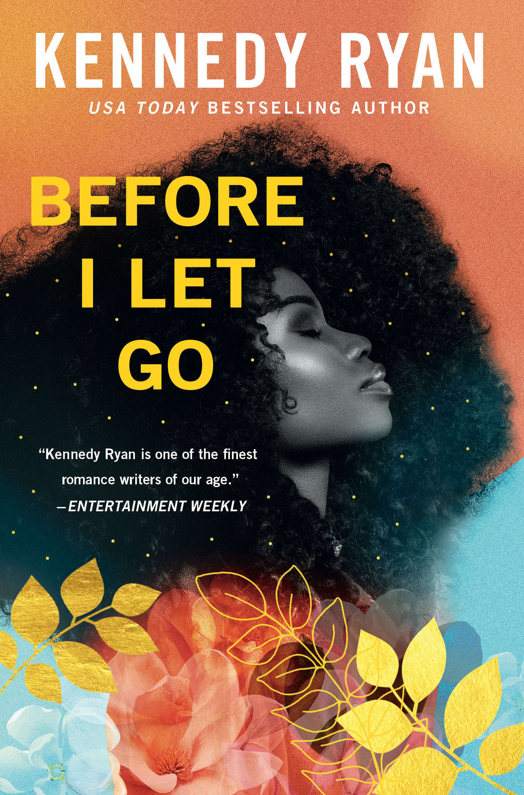

"Sometimes love requires fighting not just for each other, but through the grief that threatens to pull you apart."
Kennedy Ryan delivers an emotionally staggering, profoundly poignant masterpiece about second-chance romance, grief, and healing. *Before I Let Go* follows Yasmen and Josiah, a divorced couple who once shared an effortless, golden love before unimaginable tragedy fractured their family and tore them apart.
What makes this novel so exceptional is its raw, unvarnished honesty regarding mental health, therapy, and the hard work required to rebuild trust after loss. The chemistry between the characters is electric, but it is the depth of emotional maturity and vulnerability that elevates the story into something truly unforgettable.
A breathtaking, soul-stirring triumph that explores how love can transform, fracture, and ultimately heal.